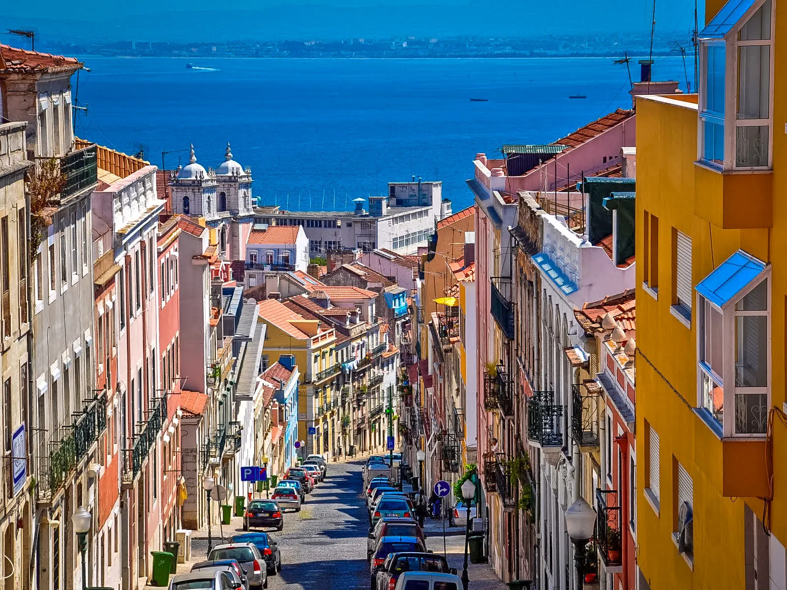

Дата та місце народження: 12 квітня, 2004, м. Дніпро
Місце навчання: НТУУ "КПІ", м. Київ
Хоббі:
Улюблені фільми:
Лісабон — столиця та найбільше місто Португалії, політичний, економічний та культурний центр країни. Адміністративний центр однойменного округу. Найзахідніша столиця материкової Європи та єдина на узбережжі Атлантичного океану.
